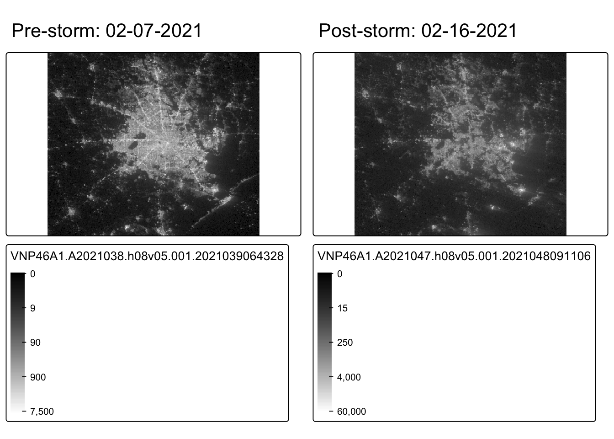
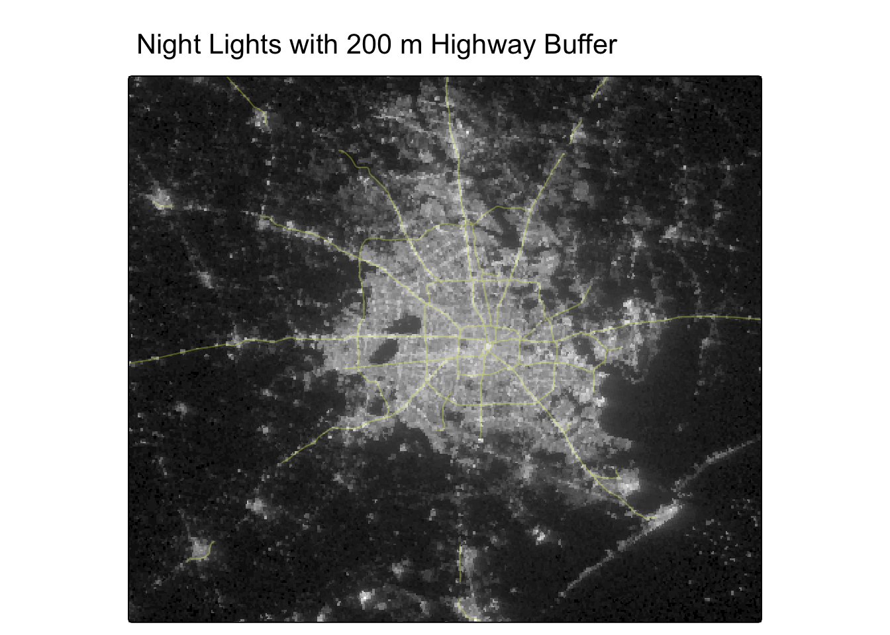

library(sf) # vector handling
library(terra) # raster handling
library(tidyverse)
library(tmap) # map making
library(viridisLite)
library(mapview)Texas’ Extreme Winter of 2021
EDS 223 HW 4
Libraries
Data Details & Processing
# NASA VIIRS data from 2021-02-07 and 2021-02-16.
h08v05_0207<- rast('data/VNP46A1/VNP46A1.A2021038.h08v05.001.2021039064328.tif')
h08v06_0207<- rast('data/VNP46A1/VNP46A1.A2021038.h08v06.001.2021039064329.tif')
h08v05_0216<- rast('data/VNP46A1/VNP46A1.A2021047.h08v05.001.2021048091106.tif')
h08v06_0216<- rast('data/VNP46A1/VNP46A1.A2021047.h08v06.001.2021048091105.tif')
# upload prepared a Geopackages
roads <- read_sf('data/gis_osm_roads_free_1.gpkg', query = "SELECT * FROM gis_osm_roads_free_1 WHERE fclass='motorway'")
buildings <- read_sf('data/gis_osm_buildings_a_free_1.gpkg', query ="SELECT *
FROM gis_osm_buildings_a_free_1`WHERE (type IS NULL AND name IS NULL)`")Check CRS and resolutions
cat("=== Tile 05 02/07/2021 ===\n")=== Tile 05 02/07/2021 ===cat("Resolution:", res(h08v05_0207), "\n")Resolution: 0.004166667 0.004166667 cat("Extent: "); print(ext(h08v05_0207))Extent: SpatExtent : -100, -90, 30, 40 (xmin, xmax, ymin, ymax)cat("\n=== Tile 06 02/07/2021 ===\n")
=== Tile 06 02/07/2021 ===cat("Resolution:", res(h08v06_0207), "\n")Resolution: 0.004166667 0.004166667 cat("Extent: "); print(ext(h08v06_0207))Extent: SpatExtent : -100, -90, 20, 30 (xmin, xmax, ymin, ymax)cat("\n=== Tile 05 02/16/2021 ===\n")
=== Tile 05 02/16/2021 ===cat("Resolution:", res(h08v05_0216), "\n")Resolution: 0.004166667 0.004166667 cat("Extent: "); print(ext(h08v05_0216))Extent: SpatExtent : -100, -90, 30, 40 (xmin, xmax, ymin, ymax)cat("\n=== Tile 06 02/16/2021 ===\n")
=== Tile 06 02/16/2021 ===cat("Resolution:", res(h08v06_0216), "\n")Resolution: 0.004166667 0.004166667 cat("Extent: "); print(ext(h08v06_0216))Extent: SpatExtent : -100, -90, 20, 30 (xmin, xmax, ymin, ymax)cat("\n=== Same CRS? ===\n")
=== Same CRS? ===cat("roads vs buildings: ", same.crs(roads, buildings), "\n")roads vs buildings: TRUE cat("Tile 05 vs Tile 06 (02-07-2021): ", same.crs(h08v05_0207, h08v06_0207), "\n")Tile 05 vs Tile 06 (02-07-2021): TRUE cat("Tile 05 vs Tile 06 (02-16-2021): ", same.crs(h08v05_0216,h08v06_0216), "\n")Tile 05 vs Tile 06 (02-16-2021): TRUE Data Merging
# Merge tiles together to get one raster for each date (2021-02-07 and 2021-02-16)
VIIRS_07<- (merge(h08v05_0207, h08v06_0207))
VIIRS_16<- (merge(h08v05_0216, h08v06_0216)) Compare Pre and Post Storm
# Create the extent of Houston
houston_ext <- ext(-96.5, -94.5, 29, 30.5)
# Crop to the Houston extent
pre_storm<- crop(VIIRS_07,houston_ext)
post_storm <- crop(VIIRS_16,houston_ext)
# Create a set of maps comparing night light intensities before and after the first two storms
m_pre <- tm_shape(pre_storm)+
tm_raster(col.scale = tm_scale_continuous_log1p(values=c('black', 'white'))) + tm_title("Pre-storm: 02-07-2021")
m_post <- tm_shape(post_storm) +
tm_raster(col.scale = tm_scale_continuous_log1p(values=c('black', 'white'))) + tm_title("Post-storm: 02-16-2021")
tmap_arrange(m_pre, m_post, ncol = 2)
storm_combined <- c(pre_storm, post_storm)Create Mask
# Raster algebra to find light intensitie difference
light_differ <- pre_storm - post_storm
# Set categories for severity levels
categories <- c("No Blackout", "Blackout")
# Create reclassification matrix
rcl <- matrix(c(-Inf, 200, 0, # No blackout
200, Inf, 1), # Blackout
ncol = 3, byrow = TRUE)
# Use reclassification matrix to reclassify dNBR raster
reclassified <- classify(light_differ, rcl = rcl)
# Assign blackouts and non-blackouts
blackout_mask <- ifel(light_differ == 0, NA, 1)
# Crop to houston extent, turn into polygons, and reproject to EPSG:3083 (NAD83 / Texas Centric Albers Equal Area)
houston_blackout <- blackout_mask |>
crop(houston_ext) |>
as.polygons() |>
st_as_sf() |>
st_make_valid() |>
st_transform(crs = 3083) Exclude highways from the cropped blackout mask
# Transforming to EPSG:3083 (NAD83 / Texas Centric Albers Equal Area)
highways <- st_transform(roads, crs = 3083)
# Create a 200m buffer
highways_buffer <- highways |>
st_union() |>
st_buffer(dist = 200)
# Excluding highways
blackout_no_highways <- st_difference(houston_blackout, highways_buffer)# Post-storm map with 200m highway buffer
tm_shape(pre_storm) +
tm_raster(col.scale = tm_scale_continuous_log1p(values = c("black", "white")),
col.legend = tm_legend(show = FALSE)) +
tm_shape(highways_buffer) +
tm_polygons(fill = "#e5f04c51",col = NULL) +
tm_title("Night Lights with 200 m Highway Buffer")
Identify the number of homes likely impacted by blackouts
# Check CRS
st_crs(buildings)Coordinate Reference System:
User input: WGS 84
wkt:
GEOGCRS["WGS 84",
ENSEMBLE["World Geodetic System 1984 ensemble",
MEMBER["World Geodetic System 1984 (Transit)"],
MEMBER["World Geodetic System 1984 (G730)"],
MEMBER["World Geodetic System 1984 (G873)"],
MEMBER["World Geodetic System 1984 (G1150)"],
MEMBER["World Geodetic System 1984 (G1674)"],
MEMBER["World Geodetic System 1984 (G1762)"],
MEMBER["World Geodetic System 1984 (G2139)"],
MEMBER["World Geodetic System 1984 (G2296)"],
ELLIPSOID["WGS 84",6378137,298.257223563,
LENGTHUNIT["metre",1]],
ENSEMBLEACCURACY[2.0]],
PRIMEM["Greenwich",0,
ANGLEUNIT["degree",0.0174532925199433]],
CS[ellipsoidal,2],
AXIS["geodetic latitude (Lat)",north,
ORDER[1],
ANGLEUNIT["degree",0.0174532925199433]],
AXIS["geodetic longitude (Lon)",east,
ORDER[2],
ANGLEUNIT["degree",0.0174532925199433]],
USAGE[
SCOPE["Horizontal component of 3D system."],
AREA["World."],
BBOX[-90,-180,90,180]],
ID["EPSG",4326]]# Assign EPSG:3083 (NAD83 / Texas Centric Albers Equal Area)
homes <- st_transform(buildings, crs=3083)
# Filter to estimate for homes impacted by blackout
homes_impacted <- st_filter(homes, blackout_no_highways)
# Count amount of rows
nrow(homes_impacted)[1] 476027Based on my analysis, an estimate of the number of 476,027 homes in Houston that lost power. This amount of homes does not seem accurate, due to the severity of the storm and the amount of residents reported to have been impacted.
Reflection
The data provides useful insight for this analysis and highlights issues that could continue to arise more frequently due to climate change. For our analysis, we used GeoPackages that included subsets of intersecting roads only for the Houston area. A more comprehensive analysis of the entire state of Texas could provide a more accurate idea of the extent of damage caused by concurrent storms.
Comparing night light intensities before and after the first two storms is very informative and easy for the general public to understand. Unfortunately, due to cloud coverage, we could not compare how the intensity changed in between. It would be informative to see how they were able to restore power to the communities. When ignoring highways to minimize falsely identifying areas with reduced traffic, there is a possibility of homes being unaccounted for. With geospatial data, the boundary lines could cause potential bias due to how they were chosen and their irregular shapes.